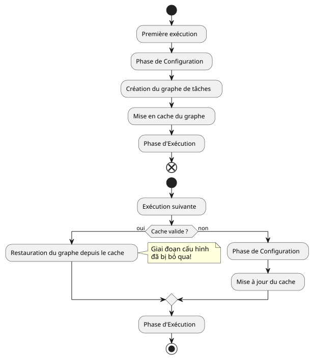

Điều 4: Bẫy Cache Cấu hình Gradle
Đăng ngày 26 September 2025
Đối tượng mục tiêu: Các nhà phát triển Gradle đã từng gặp phải những hành vi build "ma thuật" hoặc không mong đợi.
Giới thiệu
Trong cuộc hành trình tạo plugin của chúng ta`site-baker`, chúng tôi đã tuân thủ một phương pháp TDD nghiêm ngặt. Mỗi tính năng đều được kiểm tra, xác nhận và chúng tôi tiến triển một cách tự tin. Thế rồi, một ngày nọ, điều không ngờ đã xảy ra. Các bản build bắt đầu hoạt động một cách thất thường. Những thay đổi trong logic của plugin hoặc trong các tệp cấu hình dường như bị bỏ qua, và các bài kiểm tra chức năng của chúng tôi, vốn từng đáng tin cậy, lại thất bại mà không có lý do rõ ràng.
Loại vấn đề này có thể gây ra sự ức chế tột cùng. Nó khiến ta nghi ngờ về độ tin cậy của công cụ cũng như tính đúng đắn của mã nguồn. Sau một phiên gỡ lỗi căng thẳng, thủ phạm đã được xác định: chính làbộ nhớ đệm cấu hình GradleVui lòng cung cấp văn bản cần dịch.
Triệu chứng: Những bản Build Ma
Vấn đề biểu hiện theo nhiều cách khác nhau:
-
Tôi đang sửa đổi một chuỗi ký tự trong một tác vụ`println`, nhưng chuỗi cũ vẫn tiếp tục hiển thị khi thực thi.
-
Tôi đang thay đổi một giá trị trong tệp của mình`managed-jbake-context.yml`, nhưng plugin hoạt động như thể tệp không hề được sửa đổi.
-
Các bài kiểm tra chức năng, vốn tạo ra các dự án kiểm tra tức thời, đã thất bại vì plugin dường như không phát hiện được các tệp cấu hình vừa mới được tạo.
Mọi thứ diễn ra như thể Gradle đang chạy một "phiên bản ma" của bản build, phớt lờ những thay đổi gần đây nhất của chúng tôi.
Cuộc Điều Tra: Cache Cấu Hình là gì?
Bộ nhớ đệm cấu hình (configuration cache) là một tính năng tương đối mới và cực kỳ mạnh mẽ của Gradle, được kích hoạt mặc định trong các phiên bản mới. Mục tiêu của nó là giúp quá trình build nhanh hơn.
Nguyên lý rất đơn giản:
-
Trong lần chạy đầu tiên, Gradle thực hiện giai đoạnCấu hình(đọc các`build.gradle.kts`, tạo tác vụ, giải quyết các phụ thuộc) và xây dựng một đồ thị tác vụ.
-
Vào cuối giai đoạn này, Gradletuần tự hóa đồ thị tác vụ nàyvà lưu nó vào bộ nhớ đệm.
-
Trong các lần thực thi tiếp theo, nếu không có gì thay đổi (các script build,
gradle.properties, v.v.), Gradlebỏ qua hoàn toàn giai đoạn cấu hìnhvà tái sử dụng đồ thị tác vụ đã được lưu trong bộ nhớ đệm.
Việc tiết kiệm thời gian là rất đáng kể đối với các dự án lớn. Tuy nhiên, hiệu suất này có một cái giá: nó áp đặt các quy tắc nghiêm ngặt về cách viết các plugin.
Vòng đời của bộ nhớ đệm cấu hình

Nguyên nhân của Vấn đề: Một Plugin Không Tương Thích
Plugin của chúng tôi`site-baker`đã vi phạm, một cách vô tình, nhiều quy tắc của bộ nhớ đệm cấu hình. Để một đồ thị tác vụ có thể tuần tự hóa được, các tác vụ không được chứa tham chiếu đến các đối tượng phức tạp như đối tượng`Project`hoặc đọc các tệp một cách tùy ý trong giai đoạn thực thi.
Sai lầm chính của chúng tôi là đọc nội dung của tệp YAML trực tiếp bên trong logic thực thi tác vụ, bằng cách sử dụng một tham chiếu đến đường dẫn được lưu trữ trong extension của chúng tôi. Cách tiếp cận này không tương thích với cache vì Gradle không thể biết liệu nội dung của tệp có thay đổi hay không nếu việc đọc này không được mô hình hóa như mộtđầu vào tác vụVui lòng cung cấp nội dung (Task Input) cần dịch.
Giải pháp tạm thời: Vô hiệu hóa Cache
Để tháo gỡ bế tắc và khôi phục hành vi build có thể dự đoán được, giải pháp nhanh nhất là vô hiệu hóa bộ nhớ đệm cấu hình. Chỉ cần thêm dòng sau vào tệp`gradle.properties`của dự án sử dụng plugin (hoặc trong trường hợp của chúng ta, dự án kiểm thử`site-baker`).
# site-baker/gradle.properties
org.gradle.configuration-cache=falseNgay lập tức, các bản build đã trở lại hoạt động bình thường. Mỗi lần thực thi đều khởi động lại giai đoạn cấu hình và các thay đổi của chúng tôi đã được ghi nhận.
Tuy nhiên, đây chỉ là một giải pháp tạm thời, không phải là một giải pháp bền vững. Nó đánh đổi hiệu suất và không giải quyết được vấn đề cốt lõi của plugin của chúng ta.
Giải Pháp Thực Sự: Làm Cho Plugin Tương Thích
Để một plugin trở thành một "công dân tốt" của hệ sinh thái Gradle hiện đại, nó phải tương thích với bộ nhớ đệm cấu hình (configuration cache). Điều này đòi hỏi phải tư duy lại cách thức dữ liệu truyền đến các tác vụ của chúng ta.
Chìa khóa là sử dụng cácAPI của Nhà cung cấpcủa Gradle. Thay vì truyền các giá trị trực tiếp (như một`String` ou un File) cho các tác vụ của chúng tôi, chúng tôi phải chuyển từ các`Property<T>`hoặc các`Provider<T>`Vui lòng cung cấp văn bản tiếng Pháp cần dịch.
Đây là kế hoạch tái cấu trúc:
-
Khai báo các đầu vào của tác vụ:Tác vụ phân tích cú pháp tệp YAML phải khai báo tệp này là một đầu vào. Để thực hiện việc này, chúng ta sử dụng annotation`@InputFile`Vui lòng cung cấp văn bản tiếng Pháp cần dịch.
[nguồn,kotlin] Please provide the French text you would like me to translate. @get:InputFile abstract val configFile: RegularFileProperty Please provide the text you would like me to translate.
-
Sử dụng
PropertyvàProvider:Giá trị của`configFile`sẽ được kết nối với thuộc tính`configPath`của phần mở rộng DSL của chúng tôi. Nhờ đó, Gradle có thể truy vết nguồn gốc của dữ liệu.
[nguồn,kotlin] Please provide the text you would like me to translate. // Trong plugin tasks.register<MyTask>("myTask") { configFile.set(extension.configPath.flatMap { project.layout.projectDirectory.file(it) }) } Please provide the text you would like me to translate.
-
Đọc nội dung vào đúng thời điểm:Việc đọc tệp phải được thực hiện bên trong hành động của tác vụ (
@TaskAction), bằng cách sử dụng`Provider`của đầu vào.
[nguồn,kotlin] Please provide the text you would like me to translate. @TaskAction fun execute() { val content = configFile.get().asFile.readText() // … phân tích nội dung } Please provide the text you would like me to translate.
Theo mô hình này, Gradle hiểu rằng nếu nội dung của`configFile`thay đổi, bộ nhớ đệm cấu hình không còn hiệu lực và giai đoạn cấu hình phải được thực thi lại. Ngoài ra, nó biết rằng kết quả của tác vụ phụ thuộc vào nội dung của tệp này, điều này cũng cho phép tối ưu hóa bộ nhớ đệm thực thi (UP-TO-DATE).
Kết luận
Cuộc phiêu lưu gỡ lỗi này là một bài học quý giá. Hành vi "ma thuật" của bộ nhớ đệm cấu hình đã buộc chúng tôi phải hiểu rõ hơn về vòng đời của Gradle cũng như các nguyên tắc lập trình khai báo và lập trình trì hoãn (lazy).
Vô hiệu hóa bộ nhớ đệm cấu hình là một công cụ chẩn đoán hữu ích, nhưng giải pháp thực sự là thiết kế các plugin mạnh mẽ và hiện đại. Bằng cách mô hình hóa chính xác đầu vào và đầu ra của các tác vụ với các API`Provider`, chúng ta không chỉ sửa một lỗi, mà chúng ta còn cải thiện hiệu suất, độ tin cậy và khả năng bảo trì của plugin.
Trong bài viết tiếp theo, chúng ta sẽ áp dụng thực tế việc refactoring này để làm cho tác vụ parsing YAML của chúng ta hoàn toàn tương thích với cache de configuration.